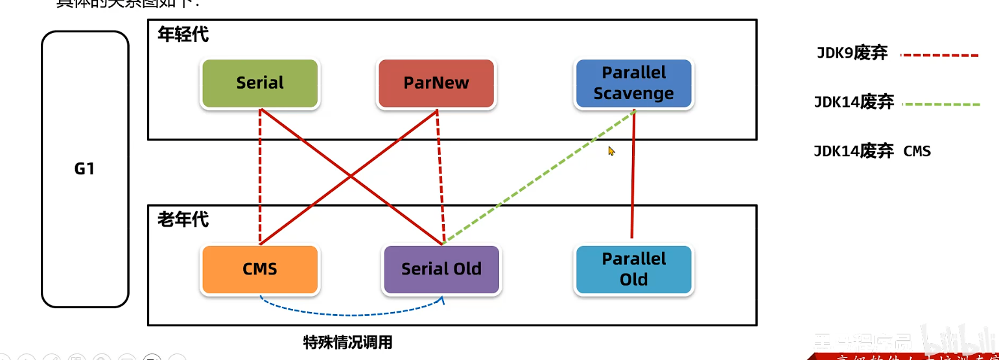
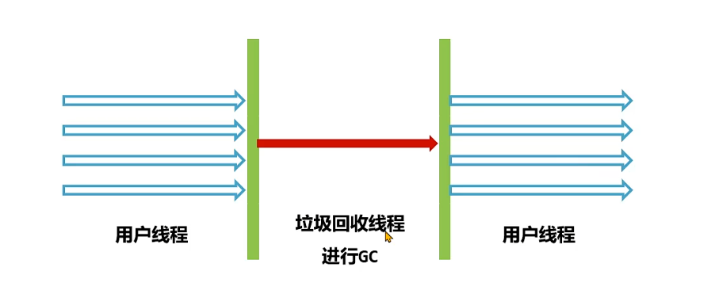
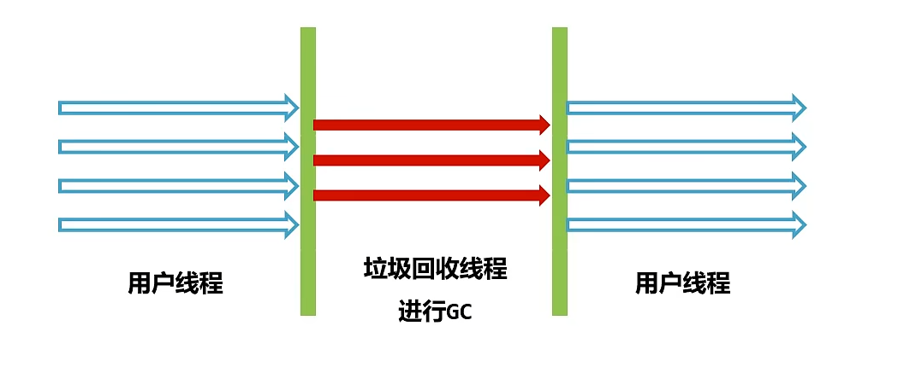
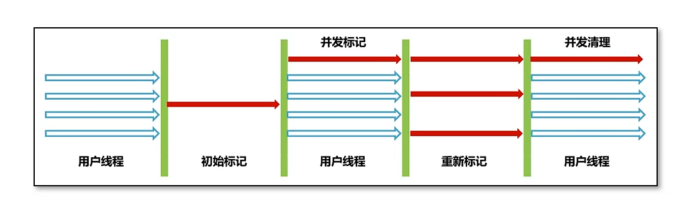
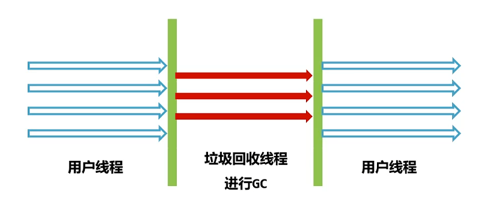
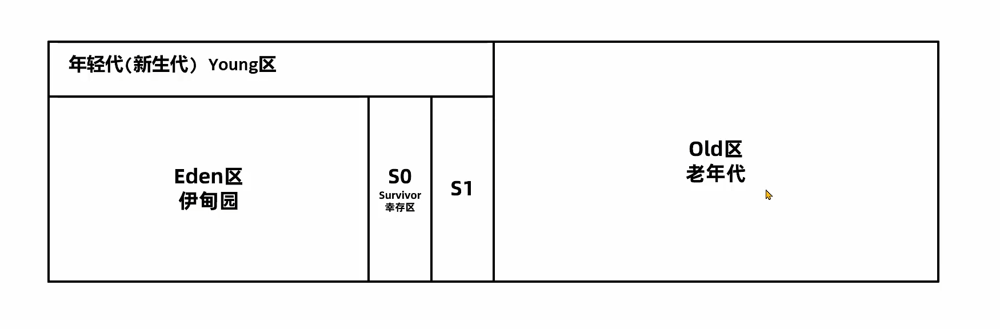
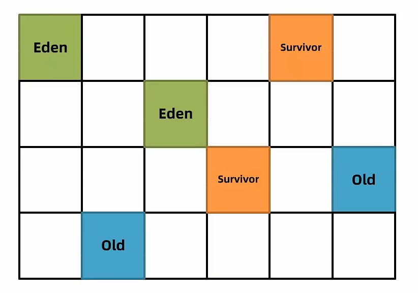
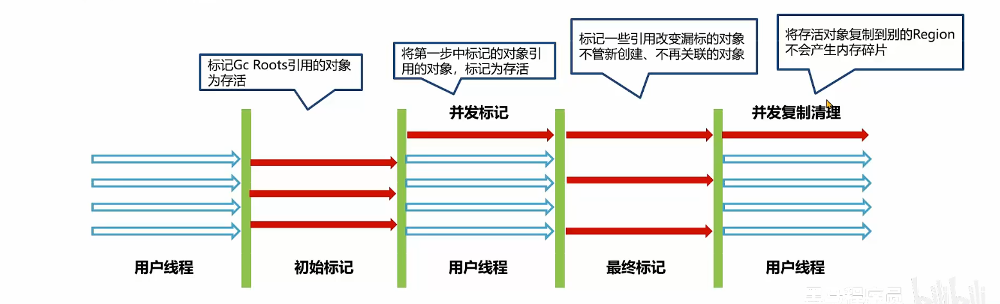

10-垃圾回收器
垃圾回收器
为什么要分代？
大部分对象都是创建出来然后不再使用，比如订单数据
老年代存放长期存活的对象，比如 Spring 的大部分 Bean 对象，不会回收
默认设置中，新生代远小于老年代
因此：
可以调整年轻代和老年代的比例
采用不同的垃圾回收算法，新生代使用复制算法（清除的对象多，复制少）；老年代可以标记-清除或者标记-整理
分代设计可以只回收新生代（Minor GC），不需要整个堆进行回收。减少 STW
垃圾回收器分为年轻代和老年代回收器，除了 G1 之外其他都需要组合使用
Serial + Serial Old（串行单线程）
年轻代 复制
老年代标记-整理
ParNew + CMS（关注暂停时间）
年轻代 复制
老年代 标记-清除+整理
老年代CMS回收：初始标记（STW）+并发标记+重新标记（STW）+并发清除
老年代过多，退化 Serial Old
关注点：STW时间，浮动垃圾，碎片问题，退化
Parallel Scavenge + Parallel Old（关注吞吐量，自动分配堆内存）
年轻代 复制
老年代 标记-清除+整理
关注点：吞吐量，自动分配堆内存
G1（较大堆同时关注暂停时间）
最大特点：选择回收，而不是每次都要回收完
年轻代 复制
混合回收 复制
混合回收流程：初始标记（STW）+并发标记+最终标记（STW）+并发复制
全满了，退化 Serial Old
关注点：复制算法无碎片，选择回收可控延迟

年轻代- Serial 垃圾回收器
单线程串行的回收年代垃圾回收器，采用复制算法
优点：单CPU吞吐量出色
缺点：多CPU吞吐量不如其他，堆内存过大 STW 过大
适用：Java 编写的客户端或者硬件配置有限的场景

老年代- SerialOld 垃圾回收器
Serial 的老年代版本，单线程串行。采用标记-整理算法
CMS特殊情况会调用
1 | -XX:+UseSerialGC |
年轻代- ParNew 垃圾回收器
本质上是 Serial 在多CPU下的优化，采用多线程进行垃圾回收
复制算法
优点：
- 多CPU的STW停顿时间短
缺点：
- 吞吐量和停顿时间不如 G1
适用：
和 CMS 老年代垃圾回收器搭配
1 | //新生代使用 ParNew |

老年代- CMS（Concurrent Mark Sweep）垃圾回收器
采用标记清除+整理算法，关注的是暂停时间
优点：
- 停顿时间短，用户体验好
缺点：
内存碎片：虽然 CMS 会在 Full GC 后整理，会导致暂停。可以调整设置为N次
退化问题：老年代内存不足，退化为 Serial Old 回收老年代
浮动垃圾问题：并发清理过程中产生的对象垃圾不能被清理，要等到下一次。
适用：用户请求频率高的场景
1 | -XX:UseConcMarkSweepGC |

初始标记（STW）：用极短时间标记GC Roots能直接关联的对象
并发标记：标记所有对象，用户进程不用暂停（占用CPU高会影响用户进程）
重新标记（STW）：并发容易错标，漏标。需要重新标记（停下来）
并发清理：不需要暂停
年轻代- Parallel Scavenge 回收器
关注吞吐量，自动调整堆内存大小，是JDK8默认的年轻代垃圾回收器
复制算法
优点：
- 吞吐量高，手动可控
缺点：
- 不能保证单次的停顿时间
适合：
后台任务，不需要交互，并且容易产生大量对象

老年代- Parallel Old 垃圾回收器
标记-清除+整理算法
1 | -XX:+UseParallelGC 或者 |
可以手动设置最大暂停时间（尽力）和吞吐量
减少最大暂停时间，就会减少堆内存分配，减少每次回收需要的范围从而减少时间
1 | //每次回收最大停顿毫秒 |
G1 （Grabage First）垃圾回收器
Parallel Scavenge 关注吞吐量，允许设置最大暂停时间，但是会减少年轻代的可用空间
CMS关注暂停时间，但是吞吐量下降了
设计目标为融合优点：
支持巨大的堆回收，并能有较大吞吐量
支持多CPU并行垃圾回收
允许设置最大暂停时间
JDK9后默认
1 | -XX:UseG1GC |
优点：
延迟可控
整体复制算法，不会有碎片
标记的 STAB 算法效率高
内存结构
G1之前一般都是连续的

G1之后的内存
整个堆分为多个大小相等的区域，称之为 区Region，区域不要求连续。
分为 Eden，Survivor，Old 区，大小通常是 堆空间 / 2048
也可以设置参数
1 | -XX:G1HeapRegionSize=32m |
Region size必须是2的指数幂，取值范围从1M到32M

算法
两种回收
年轻代回收（Young GC）
混合回收（Mixed GC）
特殊：
- Full GC
年轻代回收
回收 Eden 和 Survivor 区不用的对象，会导致 STW
可以设置参数最大暂停时间（尽可能）
1 | -XX:MaxGCPauseMills=n(默认200) |
新创建的对象会放在 Eden，如果年轻代不足（年轻代占了总堆的60%），无法分配时会触发 Young GC
标记出 Eden 和 Survivor 区域的存活对象
根据 配置的暂停时间 选择某些区域 复制 到新的 Survivor 区（age+1），然后清空这些区域
Survivor 存活对象也会搬运到另一个 Survivor （年龄+1）
年龄到达阈值，将被放入老年代
如何选择 Region 回收？
Young GC 回收过程中 G1 会记录每个 Eden 和 Survivor 的平均耗时，作为参考。
根据配置的最大暂停时间计算本次回收最多能回收多少个 Region
晋升
年龄阈值晋升
部分对象如果大小超过 Region 的一半，直接放入老年代，这部分老年代是 Humongous 区。对象过大还会横跨多个 Region
混合回收
Old老年代越来越多，总堆占有率到达阈值会触发混合 MixedGC，会开始回收所有年轻代和部分老年代的对象以及大对象区，采用 复制算法 完成。
1 | -XX:InitiatingHeapOccupancyPercent默认45% |
流程（类似CMS，但是重新标记改为了最终标记，并且使用了复制算法）：
初始标记：标记GC Root
并发标记：将第一步的GC Root 引用的标记为存活
最终标记：标记一些引用改变漏标的对象，不管新创建不关联的对象（效率高）
并发复制清理： 没有内存碎片，并且是选择存活率低的老年代进行复制

Full GC
如果清理过程发现连可以供给复制的空 Region 都没了，就要 Full GC。单线程执行标记-整理算法，会导致用户线程暂停。尽量保证有一定的堆内存，不触发这个